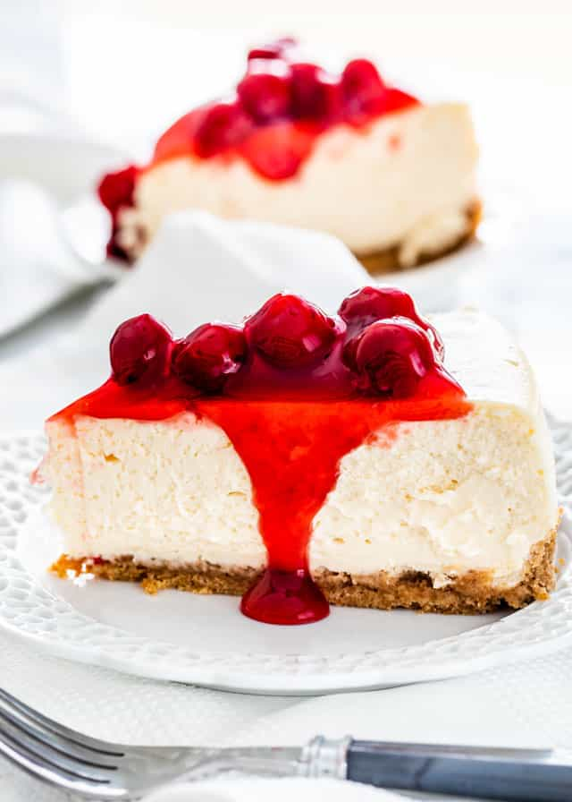

Cheesecake

Decandantly delicious cheesecake
This decandantly creamy cheesecake is made in an unconventional way.
The taste however, will be more than worth the wait. Takes approximately 20-25 minutes to prep, and
four hours to chill.
Ingredients
- One box (11 oz) vanilla wafers
- Two ounces milk chocolate chips
- Two sticks butter
- Eight ounce can of sweetened condensed milk
- Eight ounces cream cheese
- Third of a cup lemon juice
- One tsp vanilla extract
- One cup whipped topping
- Toppings to suit (optional)
Steps
- Allow cream cheese and whipped topping to thaw
- Pre-heat oven to 350 degrees
- Melt butter and chocolate in saucepan over low heat
- Crush vanilla wafers into small crumbs using a food processor or rolling pin
- Pour vanilla wafer crumbs into a bowl and add the butter/chocolate mixture once melted, mixing thoroughly
- Spray 9x9 pan with nonstick spray or coat lightly with butter or shortening
- Spread vanilla wafer mixture around bottom and sides to form crust
- Bake crust for fifteen minutes and then let cool
- In medium bowl mix cream cheese, condensed milk, lemon juice, and vanilla extract with blender
- Add whipped topping and gently fold in by hand with a spoon
- Pour cream cheese mixture into crust and chill for four hours
- Add toppings as desired and enjoy
Back to recipe page